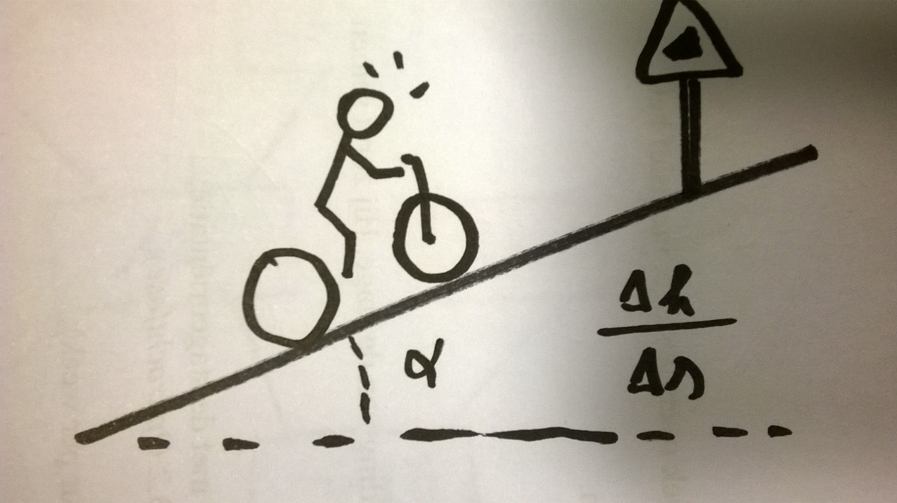

Er zijn verschillende technische parameters die kunnen beschrijven hoe krachtig de motor aanvoelt. Enkele voorbeelden zijn maximum koppel of motorvermogen. TGVelo heeft een parameter gezocht die zoveel mogelijk samenvat en zo begrijpbaar mogelijk is. Het resultaat van deze zoektocht is de maximale hellingsgraad.
De hellingsgraad is een berekend getal, en duidt aan hoe sterk de motor is. Hoe groter dit getal, hoe steilere hellingen er mee kan opgereden worden, of hoe sneller kan opgetrokken worden. De hellingsgraad is de helling die de fiets met volle belading theoretisch kan overwinnen enkel op motor aan 10 km/u, uitgedrukt in %.
De fiets wordt aangedreven op een testbank met 100 W aan de pedalen en kadans zo dicht mogelijk bij 60 rpm, in het maximale assistentieniveau. De weerstand van de testbank wordt zo ingesteld dat de fiets onder deze omstandigheden 10 km/u haalt. Het weerstandsvermogen waarbij dit bereikt wordt kan nu gebruikt worden als input voor de berekeking. De maximale hellingsgraad wordt berekend op basis van het vermogen dat beschikbaar is voor stijgen.
Hellingsgraad is gedefinieerd als de verhouding van de gestegen afstand tot de horizontaal afgelegde afstand. Als de hellingsgraad en de snelheid gekend is kan dus de gestegen afstand per tijdseenheid berekend worden. We gaan er vanuit dat de snelheid horizontaal (dezelfde richting als de afgelegde horizontale afstand) gegeven is
\[\table v_v = hg ⋅ v_h\]
In de praktijk gaat alleen de snelheid evenwijdig met het wegdek gekend zijn. De horizontale snelheid kan hieruit berekend worden als $v_h = v⋅cos(φ)$. Voor realistische hellingen is de hoek φ meestal beperkt. De horizontale snelheid is dan zo goed als gelijk aan de snelheid evenwijdig met het wegdek. Uit deze stijgsnelheid $v_v$ volgt dan het stijgvermogen $P_v$ (met g de gravitatieconstante = 9.81 m/s^2, en als massa de totale massa van fiets en fietser en standaard belading).
\[\table P_v = v_v ⋅ m ⋅ g \]
Omvormen van deze formules geeft ons de hellingsgraad in functie van het beschikbare vermogen om te stijgen.
\[\table hg = P_v / {m * g * v_h} \]
Niet al het vermogen aan het wiel kan gebruikt worden voor het stijgen. Een deel gaat verloren in rol- en luchtweerstand.
\[\table P_v = P_{tot} - v ⋅ (m ⋅ g ⋅ Cr + 0.5 ⋅ ρ ⋅ C_d A ⋅ v^2) \]